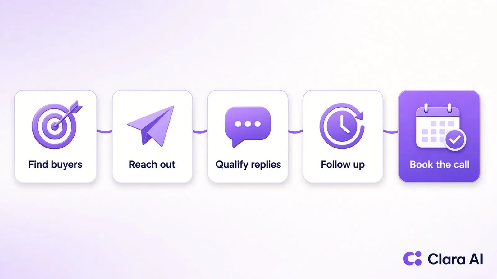

AI agents help B2B sales teams by doing the repetitive work between a cold prospect and a booked call: finding the right buyers, sending personal LinkedIn messages, following up on every lead, qualifying replies and keeping the CRM up to date. Your reps keep the part only people do well, which is the conversation and the close. The return shows up as more qualified meetings each month without adding headcount.
Ask a B2B sales head where the week goes and the answer is rarely "selling". It goes on building lists, writing first messages, chasing people who went quiet, logging calls and preparing the Monday report. Good reps end up doing admin, and the pipeline depends on whoever had a free afternoon.
The cost shows up in three places. Prospecting is patchy, so some weeks bring ten new conversations and some bring none. Inbound leads wait hours or days for a reply, and by then the buyer has spoken to someone else. And follow-up stops after one or two tries, even though many B2B buyers only respond after several touches. None of these feel like lost deals at the time. They just quietly shrink the number of first calls.
An AI agent fixes the gaps that come from limited hours, not limited skill. It does the same careful work every day, whether your team is busy closing or on leave.
An AI agent is different from a simple automation. A sequence tool sends the same message at set times. An agent reads the situation, picks the next step within rules you set and hands over when a person is needed. These are the jobs where B2B teams see the clearest gains:

Do not switch on everything at once. Start with the one job where the most time is lost or the most leads go cold, run it for a month, measure it and then add the next. This table helps you pick:
| If your main problem is | Start with | What to measure |
|---|---|---|
| Not enough new conversations | LinkedIn outreach agent | People reached, accepted, replies, meetings |
| Inbound leads going cold | Lead follow-up on WhatsApp or chat | Time to first reply, qualified leads |
| Too many enquiries to call | AI calling agent | Calls connected, meetings booked |
| Buyers cannot find you online | AI SEO agent | Search visits, demo requests from the blog |
| No clear view of the pipeline | Reporting agent | Hours saved, report accuracy |
For most B2B companies selling to other businesses, LinkedIn is where the buyers already are, so outreach is the fastest place to see results. If you are weighing doing it in-house against outsourcing, our comparison of LinkedIn automation vs a LinkedIn agency walks through the trade-offs.
Be careful with anyone who quotes a fixed return before they know your market. The honest answer depends on your deal size, your buyers and how good your offer is. What you can do is measure the steps that lead to revenue and compare them with the month before the agent started.
Here is what that looks like with real, dated numbers. For Haique Surfaces, as of 21 Oct 2026, our agent reached 345 people, 107 accepted, which is a 31% acceptance rate, and 14 replied. For Sanjeet Ray, a business coach, in October 2026 it sent 149 invites, made 43 connections, started 12 conversations and found 3 warm leads. Those are two accounts over a short window, not a promise, but they show the kind of numbers you should ask any vendor to prove with dates and screenshots.
Then do the simple maths for your own business. If one new client is worth a few months of revenue, a handful of extra qualified meetings a month usually matters far more than the cost of the agent.
Most failures come from treating an agent like a spam cannon. Watch for these mistakes:
Clara AI builds and runs the agents for you, so your team does not have to learn new software. For most B2B clients we start with the AI LinkedIn Outreach Agent:
Many teams add the AI SEO Agent next, so buyers who get a LinkedIn message and then search for you find useful pages about your work. Our guide to AI SEO agents for B2B companies covers that side, and our page on LinkedIn lead generation services explains how outreach services compare.
It is likely a good fit if you sell to other businesses, one new client is worth a meaningful amount, your buyers are on LinkedIn or search online before they call, and your reps spend too much time on admin. It works for B2B teams in any country.
It is likely not a fit if you want a one-off campaign, sell low-value consumer products or have no budget for a paid monthly service. If you are still working out what kind of AI help you need, read what a custom AI agent is.
Before a demo, have answers to three short questions: what is your sales goal, who signs off on the decision, and what is your timeline? When you message us on WhatsApp, tell us what your business does and what you want the agent to achieve. If we are not a fit, we will tell you straight away.